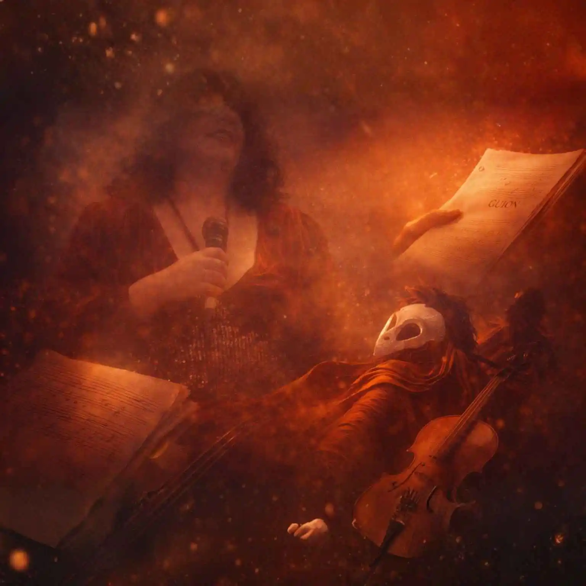

Son Zapateado
Taller experimental de
danza folklorica veracruzana
Taller experimental de
danza folklorica veracruzana

Creamos espacios arquitectónicos y escénicos con precisión técnica y carácter visual.

Participaciones artísticas con compañías teatrales, cartelera y galería de montajes.

plataforma dedicada a la creación, gestión y producción escénica. Nacemos desde la raíz del arte para impulsar proyectos teatrales, musicales y performativos con identidad, rigor y sensibilidad.
Cartelera de espectáculos, funciones y presentaciones vivas en Tonal Raíz. Mantente al tanto de las próximas fechas y funciones de nuestros proyectos escénicos.

Historias de la Tía Cuca — Monólogos, comedia y relatos escénicos que conectan con la memoria, la frescura y la cotidianidad humorística del territorio.
Tonal Raíz impulsa la creación como un medio para preservar y difundir nuestras tradiciones. Integramos danza, teatro, arquitectura y prácticas creativas para fortalecer la memoria cultural y mantener vivas las raíces que nos definen. Trabajamos desde la colaboración, el territorio y la claridad conceptual. Cada proyecto busca conectar comunidad, identity y expresión contemporánea sin perder el vínculo con su origen. Tonal Raíz es un espacio activo de cultura, donde las raíces se transforman en propuestas que dialogan con el presente y proyectan futuro.